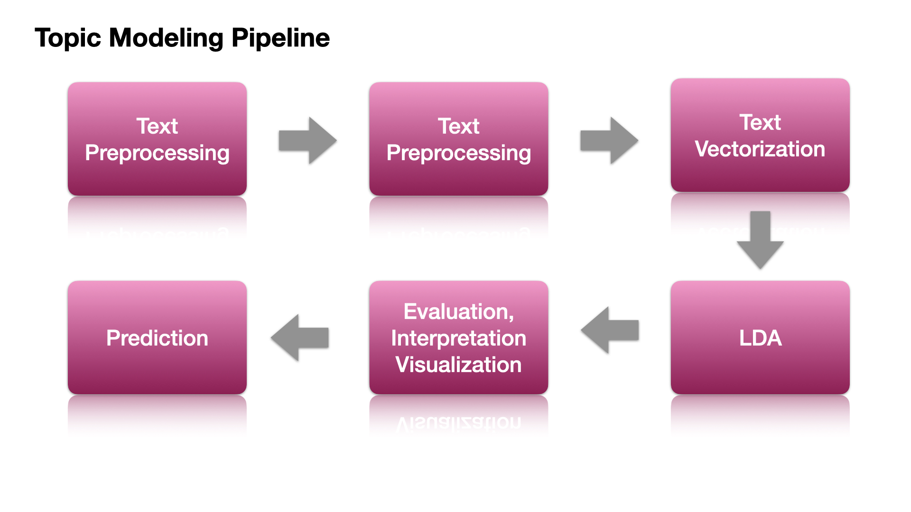

2. Topic Modeling: A Naive Example¶
2.1. What is Topic Modeling?¶
Topic modeling is an unsupervised learning method, whose objective is to extract the underlying semantic patterns among a collection of texts. These underlying semantic structures are commonly referred to as topics of the corpus.
In particular, topic modeling first extracts features from the words in the documents and use mathematical structures and frameworks like matrix factorization and SVD (Singular Value Decomposition) to identify clusters of words that share greater semantic coherence.
These clusters of words form the notions of topics.
Meanwhile, the mathematical framework will also determine the distribution of these topics for each document.
In short, an intuitive understanding of Topic Modeling:
Each document consists of several topics (a distribution of different topics).
Each topic is connected to particular groups of words (a distribution of different words).
2.2. Flowchart for Topic Modeling¶

2.3. Data Preparation and Preprocessing¶
Import Necessary Dependencies and Settings¶
import warnings
warnings.filterwarnings('ignore')
import pandas as pd
import numpy as np
import re
import nltk
import matplotlib.pyplot as plt
pd.options.display.max_colwidth = 200
%matplotlib inline
Simple Corpus¶
We will be using again a simple corpus for illustration.
It is a corpus consisting of eight documents, each of which is a sentence.
corpus = [
'The sky is blue and beautiful.', 'Love this blue and beautiful sky!',
'The quick brown fox jumps over the lazy dog.',
"A king's breakfast has sausages, ham, bacon, eggs, toast and beans",
'I love green eggs, ham, sausages and bacon!',
'The brown fox is quick and the blue dog is lazy!',
'The sky is very blue and the sky is very beautiful today',
'The dog is lazy but the brown fox is quick!'
]
labels = [
'weather', 'weather', 'animals', 'food', 'food', 'animals', 'weather',
'animals'
]
corpus = np.array(corpus)
corpus_df = pd.DataFrame({'Document': corpus, 'Category': labels})
corpus_df = corpus_df[['Document', 'Category']]
corpus_df
| Document | Category | |
|---|---|---|
| 0 | The sky is blue and beautiful. | weather |
| 1 | Love this blue and beautiful sky! | weather |
| 2 | The quick brown fox jumps over the lazy dog. | animals |
| 3 | A king's breakfast has sausages, ham, bacon, eggs, toast and beans | food |
| 4 | I love green eggs, ham, sausages and bacon! | food |
| 5 | The brown fox is quick and the blue dog is lazy! | animals |
| 6 | The sky is very blue and the sky is very beautiful today | weather |
| 7 | The dog is lazy but the brown fox is quick! | animals |
Simple Text Pre-processing¶
Depending on the nature of the raw corpus data, we may need to implement more specific steps in text preprocessing.
In our current naive example, we consider:
removing symbols and punctuations
normalizing the letter case
stripping unnecessary/redundant whitespaces
removing stopwords (which requires an intermediate tokenization step)
Tip
Other important considerations in text preprocessing include:
whether to remove hyphens
whether to lemmatize word forms
whether to stemmatize word forms
whether to remove short word tokens
whether to remove unknown words (e.g., words not listed in WordNet)
wpt = nltk.WordPunctTokenizer()
stop_words = nltk.corpus.stopwords.words('english')
def normalize_document(doc):
# lower case and remove special characters\whitespaces
doc = re.sub(r'[^a-zA-Z\s]', '', doc, re.I | re.A)
doc = doc.lower()
doc = doc.strip()
# tokeanize document
tokens = wpt.tokenize(doc)
# filter stopwords out of document
filtered_tokens = [token for token in tokens if token not in stop_words]
# re-create document from filtered tokens
doc = ' '.join(filtered_tokens)
return doc
normalize_corpus = np.vectorize(normalize_document)
norm_corpus = normalize_corpus(corpus)
norm_corpus
array(['sky blue beautiful', 'love blue beautiful sky',
'quick brown fox jumps lazy dog',
'kings breakfast sausages ham bacon eggs toast beans',
'love green eggs ham sausages bacon',
'brown fox quick blue dog lazy', 'sky blue sky beautiful today',
'dog lazy brown fox quick'], dtype='<U51')
The
norm_corpuswill be the input for our next step, text vectorization.
2.4. Text Vectorization¶
Bag of Words Model¶
In topic modeling, the simplest way of text vectorization is to adopt the feature-based Bag-of-Words model.
Recap of the characteristics of BOW model
It is a naive way to vectorize texts into numeric representations using their word frequency lists
The sequential order of words in the text is naively ignored.
We can filter the document-by-word matrix in many different ways (Please see the lecture notes on Lecture Notes: Text Vectorization
Please use the count-based vectorizer for topic modeling because most of the topic modeling algorithms will take care of the weightings automatically during the mathematical computing.
from sklearn.feature_extraction.text import CountVectorizer
# get bag of words features in sparse format
cv = CountVectorizer(min_df=0., max_df=1.)
cv_matrix = cv.fit_transform(norm_corpus)
cv_matrix
<8x20 sparse matrix of type '<class 'numpy.int64'>'
with 42 stored elements in Compressed Sparse Row format>
# view dense representation
# warning might give a memory error if data is too big
cv_matrix = cv_matrix.toarray()
cv_matrix
array([[0, 0, 1, 1, 0, 0, 0, 0, 0, 0, 0, 0, 0, 0, 0, 0, 0, 1, 0, 0],
[0, 0, 1, 1, 0, 0, 0, 0, 0, 0, 0, 0, 0, 0, 1, 0, 0, 1, 0, 0],
[0, 0, 0, 0, 0, 1, 1, 0, 1, 0, 0, 1, 0, 1, 0, 1, 0, 0, 0, 0],
[1, 1, 0, 0, 1, 0, 0, 1, 0, 0, 1, 0, 1, 0, 0, 0, 1, 0, 1, 0],
[1, 0, 0, 0, 0, 0, 0, 1, 0, 1, 1, 0, 0, 0, 1, 0, 1, 0, 0, 0],
[0, 0, 0, 1, 0, 1, 1, 0, 1, 0, 0, 0, 0, 1, 0, 1, 0, 0, 0, 0],
[0, 0, 1, 1, 0, 0, 0, 0, 0, 0, 0, 0, 0, 0, 0, 0, 0, 2, 0, 1],
[0, 0, 0, 0, 0, 1, 1, 0, 1, 0, 0, 0, 0, 1, 0, 1, 0, 0, 0, 0]])
# get all unique words in the corpus
vocab = cv.get_feature_names()
# show document feature vectors
pd.DataFrame(cv_matrix, columns=vocab)
| bacon | beans | beautiful | blue | breakfast | brown | dog | eggs | fox | green | ham | jumps | kings | lazy | love | quick | sausages | sky | toast | today | |
|---|---|---|---|---|---|---|---|---|---|---|---|---|---|---|---|---|---|---|---|---|
| 0 | 0 | 0 | 1 | 1 | 0 | 0 | 0 | 0 | 0 | 0 | 0 | 0 | 0 | 0 | 0 | 0 | 0 | 1 | 0 | 0 |
| 1 | 0 | 0 | 1 | 1 | 0 | 0 | 0 | 0 | 0 | 0 | 0 | 0 | 0 | 0 | 1 | 0 | 0 | 1 | 0 | 0 |
| 2 | 0 | 0 | 0 | 0 | 0 | 1 | 1 | 0 | 1 | 0 | 0 | 1 | 0 | 1 | 0 | 1 | 0 | 0 | 0 | 0 |
| 3 | 1 | 1 | 0 | 0 | 1 | 0 | 0 | 1 | 0 | 0 | 1 | 0 | 1 | 0 | 0 | 0 | 1 | 0 | 1 | 0 |
| 4 | 1 | 0 | 0 | 0 | 0 | 0 | 0 | 1 | 0 | 1 | 1 | 0 | 0 | 0 | 1 | 0 | 1 | 0 | 0 | 0 |
| 5 | 0 | 0 | 0 | 1 | 0 | 1 | 1 | 0 | 1 | 0 | 0 | 0 | 0 | 1 | 0 | 1 | 0 | 0 | 0 | 0 |
| 6 | 0 | 0 | 1 | 1 | 0 | 0 | 0 | 0 | 0 | 0 | 0 | 0 | 0 | 0 | 0 | 0 | 0 | 2 | 0 | 1 |
| 7 | 0 | 0 | 0 | 0 | 0 | 1 | 1 | 0 | 1 | 0 | 0 | 0 | 0 | 1 | 0 | 1 | 0 | 0 | 0 | 0 |
2.5. Latent Dirichlet Allocation¶
Intuition of LDA¶
Latent Dirichlet [diʀiˈkleː] Allocation learns the relationships between words, topics, and documents by assuming documents are generated by a particular probabilistic model.
A topic in LDA is a multinomial distribution over the words in the vocabulary of the corpus. (That is, given a topic, it’s more likely to see specific sets of words).
What LDA gives us is:
Which words are more likely to be connected to specific topics? (Topic by Word Matrix)
Which topics are more likely to be connected to specific documents? (Document by Topic Matrix)
To interpret a topic in LDA, we examine the ranked list of the most probable (top N) words in that topic.
Common words in the corpus often appear near the top of the words for each topic, which makes it hard to differentiate the meanings of these topics sometimes.
When inspecting the word rankings for each topic, we can utilize two types of information provided by LDA:
The frequencies of the words under each topic
The exclusivity of the words to the topic (i.e., the degree to which the word appears in that particular topic to the exclusion of others).
Building LDA Model¶
We should use
CountVectorizerwhen fitting LDA instead ofTfidfVectorizerbecause LDA is based on term count and document count.Fitting LDA with
TfidfVectorizerwill result in rare words being dis-proportionally sampled.As a result, they will have greater impact and influence on the final topic distribution.
%%time
from sklearn.decomposition import LatentDirichletAllocation
lda = LatentDirichletAllocation(n_components=3, max_iter=10000, random_state=0)
doc_topic_matrix = lda.fit_transform(cv_matrix)
CPU times: user 5.92 s, sys: 6.88 ms, total: 5.93 s
Wall time: 5.93 s
Model Performance Metrics¶
We can diagnose the model performance using perplexity and log-likelihood.
The higher the log-likelihood, the better.
The lower the perplexity, the better.
# log-likelihood
print(lda.score(cv_matrix))
# perplexity
print(lda.perplexity(cv_matrix))
-138.91263303644246
25.29296641284209
2.6. Interpretation¶
To properly interpret the results provided by LDA, we need to get two important matrices:
Document-by-Topic Matrix: This is the matrix returned by the
LatentDirichletAllocationobject when wefit_transform()the model with the data.Word-by-Topic Matrix: We can retrieve this matrix from a fitted
LatentDirichletAllocationobject. i.e.,LatentDirichletAllocation.components_
Document-by-Topic Matrix¶
In Document-by-Topic matrix, we can see how each document in the corpus (row) is connected to each topic.
In particular, the numbers refer to the probability value of a specific document being connected to a particular topic.
## doc-topic matrix
doc_topic_df = pd.DataFrame(doc_topic_matrix, columns=['T1', 'T2', 'T3'])
doc_topic_df
| T1 | T2 | T3 | |
|---|---|---|---|
| 0 | 0.832191 | 0.083480 | 0.084329 |
| 1 | 0.863554 | 0.069100 | 0.067346 |
| 2 | 0.047794 | 0.047776 | 0.904430 |
| 3 | 0.037243 | 0.925559 | 0.037198 |
| 4 | 0.049121 | 0.903076 | 0.047802 |
| 5 | 0.054902 | 0.047778 | 0.897321 |
| 6 | 0.888287 | 0.055697 | 0.056016 |
| 7 | 0.055704 | 0.055689 | 0.888607 |
Topic-by-Word Matrix¶
In Topic-by-Word matrix, we can see how each topic (row) is connected to each word in the BOW.
In particular, the numbers refer to the importance of the word with respect to each topic.
topic_word_matrix = lda.components_
pd.DataFrame(topic_word_matrix, columns=vocab)
| bacon | beans | beautiful | blue | breakfast | brown | dog | eggs | fox | green | ham | jumps | kings | lazy | love | quick | sausages | sky | toast | today | |
|---|---|---|---|---|---|---|---|---|---|---|---|---|---|---|---|---|---|---|---|---|
| 0 | 0.333699 | 0.333647 | 3.332365 | 3.373774 | 0.333647 | 0.333891 | 0.333891 | 0.333699 | 0.333891 | 0.333793 | 0.333699 | 0.333814 | 0.333647 | 0.333891 | 1.330416 | 0.333891 | 0.333699 | 4.332439 | 0.333647 | 1.332558 |
| 1 | 2.332696 | 1.332774 | 0.333853 | 0.334283 | 1.332774 | 0.333761 | 0.333761 | 2.332696 | 0.333761 | 1.332543 | 2.332696 | 0.333767 | 1.332774 | 0.333761 | 1.335461 | 0.333761 | 2.332696 | 0.333812 | 1.332774 | 0.333744 |
| 2 | 0.333606 | 0.333579 | 0.333782 | 1.291942 | 0.333579 | 3.332347 | 3.332347 | 0.333606 | 3.332347 | 0.333664 | 0.333606 | 1.332419 | 0.333579 | 3.332347 | 0.334123 | 3.332347 | 0.333606 | 0.333749 | 0.333579 | 0.333698 |
We can transpose the matrix for clarity of inspection.
pd.DataFrame(np.transpose(topic_word_matrix), index=vocab)
| 0 | 1 | 2 | |
|---|---|---|---|
| bacon | 0.333699 | 2.332696 | 0.333606 |
| beans | 0.333647 | 1.332774 | 0.333579 |
| beautiful | 3.332365 | 0.333853 | 0.333782 |
| blue | 3.373774 | 0.334283 | 1.291942 |
| breakfast | 0.333647 | 1.332774 | 0.333579 |
| brown | 0.333891 | 0.333761 | 3.332347 |
| dog | 0.333891 | 0.333761 | 3.332347 |
| eggs | 0.333699 | 2.332696 | 0.333606 |
| fox | 0.333891 | 0.333761 | 3.332347 |
| green | 0.333793 | 1.332543 | 0.333664 |
| ham | 0.333699 | 2.332696 | 0.333606 |
| jumps | 0.333814 | 0.333767 | 1.332419 |
| kings | 0.333647 | 1.332774 | 0.333579 |
| lazy | 0.333891 | 0.333761 | 3.332347 |
| love | 1.330416 | 1.335461 | 0.334123 |
| quick | 0.333891 | 0.333761 | 3.332347 |
| sausages | 0.333699 | 2.332696 | 0.333606 |
| sky | 4.332439 | 0.333812 | 0.333749 |
| toast | 0.333647 | 1.332774 | 0.333579 |
| today | 1.332558 | 0.333744 | 0.333698 |
Interpreting the Meanings of Topics¶
This is the most crucial step in topic modeling. The LDA does not give us a label for each topic.
It is the analyst who determines the meanings of the topics.
These decisions are based on the words under each topic that show high importance weights.
## This function sorts the words importances under each topic
## and the selectional criteria include (a) ranks based on weights, or (b) cutoff on weights
def get_topics_meanings(tw_m,
vocab,
display_weights=False,
topn=5,
weight_cutoff=0.6):
for i, topic_weights in enumerate(tw_m): ## for each topic row
topic = [(token, np.round(weight, 2))
for token, weight in zip(vocab, topic_weights)
] ## zip (word, importance_weight)
topic = sorted(topic,
key=lambda x: -x[1]) ## rank words according to weights
if display_weights:
topic = [item for item in topic if item[1] > weight_cutoff
] ## output words whose weights > 0.6
print(f"Topic #{i} :\n{topic}")
print("=" * 20)
else:
topic_topn = topic[:topn]
topic_topn = ' '.join([word for word, weight in topic_topn])
print(f"Topic #{i} :\n{topic_topn}")
print('=' * 20)
To use the above function:
If we are to display the weights of words, then we need to specify the
weight_cutoff.If we are to display only the top N words, then we need to specify the
topn.
get_topics_meanings(topic_word_matrix,
vocab,
display_weights=True,
weight_cutoff=2)
Topic #0 :
[('sky', 4.33), ('blue', 3.37), ('beautiful', 3.33)]
====================
Topic #1 :
[('bacon', 2.33), ('eggs', 2.33), ('ham', 2.33), ('sausages', 2.33)]
====================
Topic #2 :
[('brown', 3.33), ('dog', 3.33), ('fox', 3.33), ('lazy', 3.33), ('quick', 3.33)]
====================
get_topics_meanings(topic_word_matrix, vocab, display_weights=False, topn=3)
Topic #0 :
sky blue beautiful
====================
Topic #1 :
bacon eggs ham
====================
Topic #2 :
brown dog fox
====================
2.7. Topics in Documents¶
After we determine the meanings of the topics, we can now analyze how each document is connected to these topics.
That is, we can now look at the Document-by-Topic Matrix.
topics = ['weather', 'food', 'animal']
doc_topic_df.columns = topics
doc_topic_df['corpus'] = norm_corpus
doc_topic_df
| weather | food | animal | corpus | |
|---|---|---|---|---|
| 0 | 0.832191 | 0.083480 | 0.084329 | sky blue beautiful |
| 1 | 0.863554 | 0.069100 | 0.067346 | love blue beautiful sky |
| 2 | 0.047794 | 0.047776 | 0.904430 | quick brown fox jumps lazy dog |
| 3 | 0.037243 | 0.925559 | 0.037198 | kings breakfast sausages ham bacon eggs toast beans |
| 4 | 0.049121 | 0.903076 | 0.047802 | love green eggs ham sausages bacon |
| 5 | 0.054902 | 0.047778 | 0.897321 | brown fox quick blue dog lazy |
| 6 | 0.888287 | 0.055697 | 0.056016 | sky blue sky beautiful today |
| 7 | 0.055704 | 0.055689 | 0.888607 | dog lazy brown fox quick |
We can visualize the topics distribution for each document using stack plot.
x_axis = ['DOC' + str(i) for i in range(len(norm_corpus))]
y_axis = doc_topic_df[['weather', 'food', 'animal']]
fig, ax = plt.subplots(figsize=(15, 8))
# Plot a stackplot - https://matplotlib.org/3.1.1/gallery/lines_bars_and_markers/stackplot_demo.html
ax.stackplot(x_axis, y_axis.T, baseline='wiggle', labels=y_axis.columns)
# Move the legend off of the chart
ax.legend(loc=(1.04, 0))
<matplotlib.legend.Legend at 0x7fb1622c87b8>
2.8. Clustering documents using topic model features¶
from sklearn.cluster import KMeans
km = KMeans(n_clusters=3, random_state=0)
km.fit_transform(doc_topic_matrix)
cluster_labels = km.labels_
cluster_labels = pd.DataFrame(cluster_labels, columns=['ClusterLabel'])
pd.concat([corpus_df, cluster_labels], axis=1)
| Document | Category | ClusterLabel | |
|---|---|---|---|
| 0 | The sky is blue and beautiful. | weather | 1 |
| 1 | Love this blue and beautiful sky! | weather | 1 |
| 2 | The quick brown fox jumps over the lazy dog. | animals | 2 |
| 3 | A king's breakfast has sausages, ham, bacon, eggs, toast and beans | food | 0 |
| 4 | I love green eggs, ham, sausages and bacon! | food | 0 |
| 5 | The brown fox is quick and the blue dog is lazy! | animals | 2 |
| 6 | The sky is very blue and the sky is very beautiful today | weather | 1 |
| 7 | The dog is lazy but the brown fox is quick! | animals | 2 |
2.9. Visualizing Topic Models¶
import pyLDAvis
import pyLDAvis.sklearn
import dill
import warnings
warnings.filterwarnings('ignore')
pyLDAvis.enable_notebook()
cv_matrix = cv.fit_transform(norm_corpus)
pyLDAvis.sklearn.prepare(lda, cv_matrix, cv, mds='mmds')
2.10. Hyperparameter Tuning¶
One thing we haven’t made explicit is that the number of topics so far has been pre-determined.
How to find the optimal number of topics can be challenging in topic modeling.
We can take this as a hyperparameter of the model and use Grid Search to find the most optimal number of topics.
Similarly, we can fine tune the other hyperparameters of LDA as well (e.g.,
learning_decay).
learning_method: The default isbatch; that is, use all training data for parameter estimation. If it isonline, the model will update the parameters on a token by token basis.learning_decay: If thelearning_methodisonline, we can specify a parameter that controls learning rate in the online learning method (usually set between (0.5, 1.0]).
Tip
Doing Grid Search with LDA models can be very slow. There are some other topic modeling algorithms that are a lot faster. Please refer to Sarkar (2019) Chapter 6 for more information.
Grid Search for Topic Number¶
%%time
from sklearn.decomposition import LatentDirichletAllocation
from sklearn.model_selection import GridSearchCV
# Options to try with our LDA
# Beware it will try *all* of the combinations, so it'll take ages
search_params = {'n_components': range(3,8), 'learning_decay': [.5, .7]}
# Set up LDA with the options we'll keep static
model = LatentDirichletAllocation(learning_method='online', ## `online` for large datasets
max_iter=10000,
random_state=0)
# Try all of the options
gridsearch = GridSearchCV(model,
param_grid=search_params,
n_jobs=-1,
verbose=1)
gridsearch.fit(cv_matrix)
## Save the best model
best_lda = gridsearch.best_estimator_
Fitting 5 folds for each of 10 candidates, totalling 50 fits
[Parallel(n_jobs=-1)]: Using backend LokyBackend with 16 concurrent workers.
[Parallel(n_jobs=-1)]: Done 18 tasks | elapsed: 29.1s
[Parallel(n_jobs=-1)]: Done 50 out of 50 | elapsed: 55.7s finished
CPU times: user 7.97 s, sys: 12.7 ms, total: 7.99 s
Wall time: 1min 3s
# What did we find?
print("Best Model's Params: ", gridsearch.best_params_)
print("Best Log Likelihood Score: ", gridsearch.best_score_)
print('Best Model Perplexity: ', best_lda.perplexity(cv_matrix))
Best Model's Params: {'learning_decay': 0.5, 'n_components': 3}
Best Log Likelihood Score: -50.410874498711244
Best Model Perplexity: 25.292966407265162
Examining the Grid Search Results¶
cv_results_df = pd.DataFrame(gridsearch.cv_results_)
cv_results_df
| mean_fit_time | std_fit_time | mean_score_time | std_score_time | param_learning_decay | param_n_components | params | split0_test_score | split1_test_score | split2_test_score | split3_test_score | split4_test_score | mean_test_score | std_test_score | rank_test_score | |
|---|---|---|---|---|---|---|---|---|---|---|---|---|---|---|---|
| 0 | 16.469226 | 2.128114 | 0.001277 | 0.000161 | 0.5 | 3 | {'learning_decay': 0.5, 'n_components': 3} | -45.022881 | -73.947624 | -60.589126 | -37.947945 | -34.546797 | -50.410874 | 14.789181 | 1 |
| 1 | 18.579647 | 4.115401 | 0.001244 | 0.000172 | 0.5 | 4 | {'learning_decay': 0.5, 'n_components': 4} | -49.145597 | -82.726222 | -65.081852 | -42.126555 | -37.038041 | -55.223653 | 16.689929 | 4 |
| 2 | 15.408343 | 1.536522 | 0.001236 | 0.000176 | 0.5 | 5 | {'learning_decay': 0.5, 'n_components': 5} | -50.024619 | -86.229447 | -68.803221 | -44.942217 | -42.246234 | -58.449148 | 16.702671 | 5 |
| 3 | 17.233479 | 2.188188 | 0.001266 | 0.000196 | 0.5 | 6 | {'learning_decay': 0.5, 'n_components': 6} | -52.609495 | -92.798988 | -76.277660 | -48.051613 | -50.126104 | -63.972772 | 17.644821 | 8 |
| 4 | 15.746874 | 1.422879 | 0.001216 | 0.000143 | 0.5 | 7 | {'learning_decay': 0.5, 'n_components': 7} | -54.878310 | -99.179301 | -75.026422 | -50.917763 | -46.539680 | -65.308295 | 19.543899 | 10 |
| 5 | 17.122218 | 2.119591 | 0.001261 | 0.000168 | 0.7 | 3 | {'learning_decay': 0.7, 'n_components': 3} | -45.022882 | -73.947624 | -60.589126 | -37.947946 | -34.546797 | -50.410875 | 14.789181 | 2 |
| 6 | 17.024469 | 2.581231 | 0.001156 | 0.000288 | 0.7 | 4 | {'learning_decay': 0.7, 'n_components': 4} | -49.145597 | -81.939131 | -65.081852 | -42.126555 | -37.038041 | -55.066235 | 16.431495 | 3 |
| 7 | 15.913083 | 1.364438 | 0.001073 | 0.000371 | 0.7 | 5 | {'learning_decay': 0.7, 'n_components': 5} | -50.024619 | -86.229447 | -68.803221 | -44.942217 | -42.246234 | -58.449148 | 16.702671 | 6 |
| 8 | 15.555237 | 0.568224 | 0.000944 | 0.000366 | 0.7 | 6 | {'learning_decay': 0.7, 'n_components': 6} | -52.609495 | -92.798988 | -76.277744 | -48.051613 | -44.648808 | -62.877330 | 18.613898 | 7 |
| 9 | 11.960104 | 0.910794 | 0.000647 | 0.000114 | 0.7 | 7 | {'learning_decay': 0.7, 'n_components': 7} | -54.878310 | -99.179301 | -75.026422 | -50.917763 | -46.539680 | -65.308295 | 19.543899 | 9 |
import seaborn as sns
sns.set(rc={"figure.dpi":150, 'savefig.dpi':150})
sns.pointplot(x="param_n_components",
y="mean_test_score",
hue="param_learning_decay",
data=cv_results_df)
<AxesSubplot:xlabel='param_n_components', ylabel='mean_test_score'>
get_topics_meanings(best_lda.components_,
vocab,
display_weights=True,
weight_cutoff=2)
Topic #0 :
[('sky', 4.33), ('blue', 3.37), ('beautiful', 3.33)]
====================
Topic #1 :
[('bacon', 2.33), ('eggs', 2.33), ('ham', 2.33), ('sausages', 2.33)]
====================
Topic #2 :
[('brown', 3.33), ('dog', 3.33), ('fox', 3.33), ('lazy', 3.33), ('quick', 3.33)]
====================
2.11. Topic Prediction¶
We can use our LDA to make predictions of topics for new documents.
new_texts = ['The sky is so blue', 'Love burger with ham']
new_texts_norm = normalize_corpus(new_texts)
new_texts_cv = cv.transform(new_texts_norm)
new_texts_cv.shape
(2, 20)
new_texts_doc_topic_matrix = best_lda.transform(new_texts_cv)
topics = ['weather', 'food', 'animal']
new_texts_doc_topic_df = pd.DataFrame(new_texts_doc_topic_matrix,
columns=topics)
new_texts_doc_topic_df['predicted_topic'] = [
topics[i] for i in np.argmax(new_texts_doc_topic_df.values, axis=1)
]
new_texts_doc_topic_df['corpus'] = new_texts_norm
new_texts_doc_topic_df
| weather | food | animal | predicted_topic | corpus | |
|---|---|---|---|---|---|
| 0 | 0.775601 | 0.111301 | 0.113098 | weather | sky blue |
| 1 | 0.123416 | 0.764964 | 0.111620 | food | love burger ham |
2.12. Additional Notes¶
We can calculate a metric to evaluate the coherence of each topic.
The coherence computation is implemented in
gensim. To apply the coherence comptuation to asklearn-trained LDA, we needtmtoolkit(tmtoolkit.topicmod.evaluate.metric_coherence_gensim).I leave notes here in case in the future we need to compute the coherence metrics.
Warning
tmtoolkit does not support spacy 3+. Also, tmtoolkit will downgrade several important packages to lower versions. Please use it with caution. I would suggest creating another virtual environment for this.
The following codes demonstrate how to find the optimal topic number based on the coherence scores of the topic models.
import tmtoolkit
from tmtoolkit.topicmod.evaluate import metric_coherence_gensim
def topic_model_coherence_generator(topic_num_start=2,
topic_num_end=6,
norm_corpus='',
cv_matrix='',
cv=''):
norm_corpus_tokens = [doc.split() for doc in norm_corpus]
models = []
coherence_scores = []
for i in range(topic_num_start, topic_num_end):
print(i)
cur_lda = LatentDirichletAllocation(n_components=i,
max_iter=10000,
random_state=0)
cur_lda.fit_transform(cv_matrix)
cur_coherence_score = metric_coherence_gensim(
measure='c_v',
top_n=5,
topic_word_distrib=cur_lda.components_,
dtm=cv.fit_transform(norm_corpus),
vocab=np.array(cv.get_feature_names()),
texts=norm_corpus_tokens)
models.append(cur_lda)
coherence_scores.append(np.mean(cur_coherence_score))
return models, coherence_scores
%%time
ts = 2
te = 10
models, coherence_scores = topic_model_coherence_generator(
ts, te, norm_corpus=norm_corpus, cv=cv, cv_matrix=cv_matrix)
2
3
4
5
6
7
8
9
CPU times: user 57.9 s, sys: 433 ms, total: 58.3 s
Wall time: 58.4 s
coherence_scores
[0.6517493196892892,
0.8866946211961687,
0.765479848024043,
0.8341252576008902,
0.8572203857656319,
0.7066394264220808,
0.6391495323490347,
0.6086551968156503]
coherence_df = pd.DataFrame({
'TOPIC_NUMBER': [str(i) for i in range(ts, te)],
'COHERENCE_SCORE': np.round(coherence_scores, 4)
})
coherence_df.sort_values(by=["COHERENCE_SCORE"], ascending=False)
| TOPIC_NUMBER | COHERENCE_SCORE | |
|---|---|---|
| 1 | 3 | 0.8867 |
| 4 | 6 | 0.8572 |
| 3 | 5 | 0.8341 |
| 2 | 4 | 0.7655 |
| 5 | 7 | 0.7066 |
| 0 | 2 | 0.6517 |
| 6 | 8 | 0.6391 |
| 7 | 9 | 0.6087 |
import plotnine
from plotnine import ggplot, aes, geom_point, geom_line, labs
plotnine.options.dpi = 150
g = (ggplot(coherence_df) + aes(x="TOPIC_NUMBER", y="COHERENCE_SCORE") +
geom_point(stat="identity") + geom_line(group=1, color="lightgrey") +
labs(x="Number of Topics", y="Average Coherence Score"))
g
<ggplot: (-9223363261886682501)>
2.13. References¶
Sarkar (2019), Chapter 6: Text Summarization and Topic Models